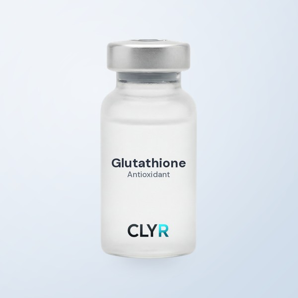
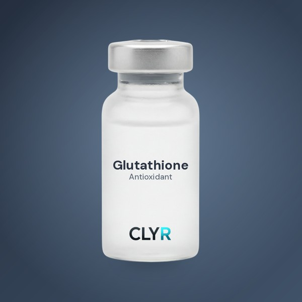
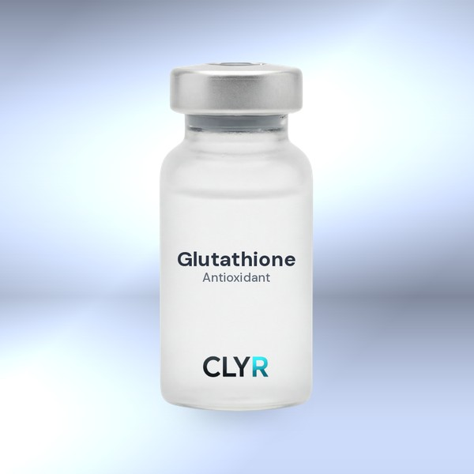
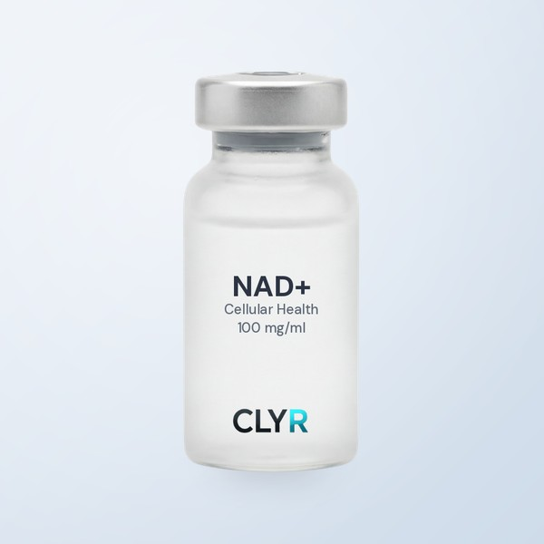
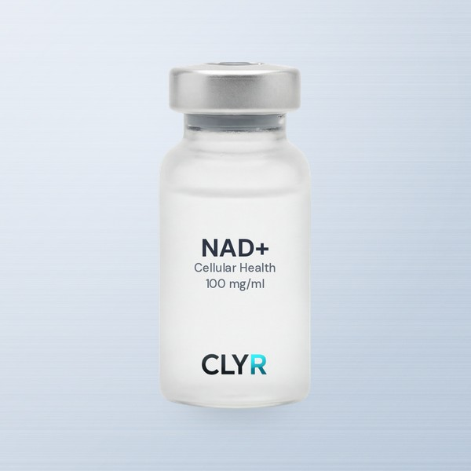
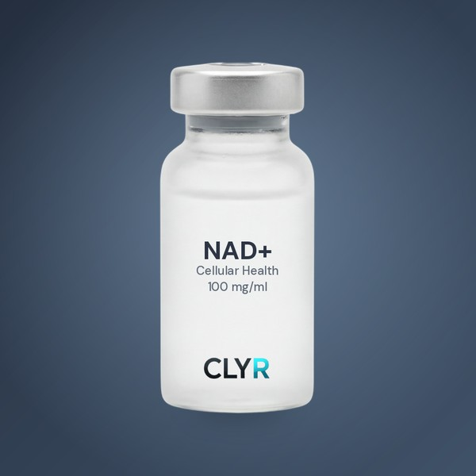

METALLIC BACKGROUND OPTIONS — longevity vials · pick one
Terminator-vibe metallic backgrounds
Four takes on metallic blue-silver for the longevity line. Lighter (D/A) keep it clinical; darker (C/B) go full chrome. Same vial, same size on each. Tell me which letter, and I'll dial intensity to taste.
Glutathione on each

D · Soft silver-blueRefined, lightest metal
A · Brushed steelSubtle striations, clinical

C · Deep steel-navyDark, premium, rim glow

B · Liquid chromeFull T-1000 mirror
NAD+ on each (consistency check)

D · Soft silver-blue

A · Brushed steel

C · Deep steel-navy